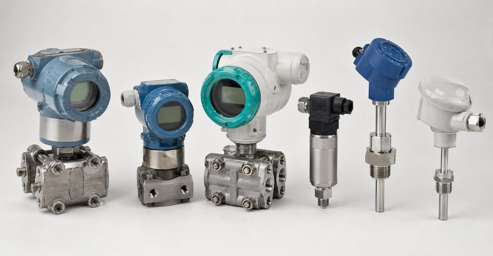

چرا مقایسه برندها سخت است؟
بازار ترانسمیتر صنعتی دهها برند دارد و بیشتر آنها در ظاهر مشخصات مشابهی ارائه میکنند؛ اما تفاوتهای واقعی در جزئیات پنهان است: پایداری بلندمدت، رفتار در شرایط سخت، کیفیت مستندات، پشتیبانی و در دسترس بودن قطعات. از طرفی هر پروژه محدودیتهای خودش را دارد: وندورلیست، بودجه و زمان تحویل. مقایسه معنادار وقتی ممکن است که معیارها از ابتدا تعریف و وزندهی شوند؛ در غیر این صورت، تصمیم به عادت یا قیمت ختم میشود و هزینههای پنهان در بهرهبرداری ظاهر میگردد.

معیارهای ارزیابی
- مشخصات فنی: دقت، پایداری، رنج و قابلیتهای تشخیصی.
- سابقه نصب: تعداد و کیفیت مراجع در سرویس مشابه.
- پشتیبانی: نمایندگی، آموزش و دسترسی به متخصص.
- قطعات و تعمیر: زمان تحویل و هزینه چرخه عمر.
- مدارک: گواهیها، تاییدیهها و مستندات فنی قابل ارائه.
- زمان تحویل و شرایط بازرگانی.
چارچوب تصمیمگیری
یک چارچوب ساده و موثر چنین است: ابتدا الزامات غیرقابل مذاکره را فیلتر کنید (مانند برندهای مجاز وندورلیست، تاییدیههای ناحیه خطر و پروتکل ارتباطی). سپس برای گزینههای باقیمانده، امتیازدهی وزنی بر اساس معیارهای بالا انجام دهید؛ وزنها باید بازتاب اهمیت واقعی هر معیار در پروژه شما باشند، نه اعداد پیشفرض. در نهایت، قیمت را در کنار امتیاز فنی ببینید: تفاوت قیمت بین دو برند معتبر معمولا در برابر هزینه توقف خط یا دوبارهکاری ناچیز است و انتخاب ارزانترین گزینه بدون پشتوانه فنی، ریسک پنهان دارد.
نکات عملی خرید پروژهای
در خرید پروژهای، چند نکته تجربهشده اهمیت دارد: یکسانسازی مشخصات در استعلامها تا پیشنهادها قابل مقایسه باشند، درخواست مدارک نمونه و تاییدیهها پیش از سفارش انبوه، و بررسی زمان تحویل واقعی با مراجع. در پروژههای بزرگ، خرید یک نمونه و تست میدانی پیش از سفارش کامل، ریسک را به شدت کاهش میدهد. همچنین استانداردسازی برند در نقاط مشابه، موجودی قطعات و آموزش بهرهبرداران را ساده میکند؛ این مزیت در طول عمر پروژه، ارزش ملموسی دارد.
در نهایت، تجربه نشان میدهد موفقترین خریدها آنهایی بودهاند که خریدار پیش از استعلام، وزندهی معیارها را مکتوب و با واحد بهرهبرداری هماهنگ کرده است؛ این هماهنگی از تغییر تصمیم در مراحل پایانی و تحمیل هزینه جلوگیری مینماید.
مستندسازی این فرایند نیز خود بخشی از دفاع خرید است.
دسترسپذیری و پشتیبانی پس از خرید
در مقایسه برندهای ترانسمیتر، بیشتر خریداران روی مشخصات فنی و قیمت تمرکز میکنند؛ اما تجربه پروژهها نشان میدهد دو عامل دیررسپذیر، اغلب تعیینکنندهترند: دسترسپذیری کالا و کیفیت پشتیبانی پس از خرید. دسترسپذیری شامل چند لایه است: زمان تحویل استاندارد هر برند برای مدلهای پرتقاضا، موجودی نمایندگان محلی برای تحویل فوری و امکان تهیه قطعات یدکی در درازمدت. برندی که زمان تحویل آن برای پروژه شما بسیار طولانی است، حتی با مشخصات فنی بهتر، میتواند برنامه پروژه را به خطر بیندازد. برای واحدهای در حال بهرهبرداری هم این موضوع اهمیت دارد؛ وقتی ترانسمیتر یک نقطه حیاتی خراب میشود، تفاوت بین موجود بودن یک جایگزین در انبار یا انتظار چند هفتهای، در هزینه توقف تولید خود را نشان میدهد. لایه دوم، خدمات فنی و کالیبراسیون است؛ وجود مرکز خدمات مجاز یا نماینده آموزشدیده، هزینه نگهداری را کم و زمان پاسخ را کوتاه میکند. در ارزیابی پشتیبانی، چند سوال عملی کمککنندهاند: زمان پاسخ به درخواست خدمات چقدر است، آیا خدمات راهاندازی در محل ارائه میشود، نرمافزارهای پیکربندی به رایگان در دسترساند و مستندات فنی به چه زبانی و چه کیفیتی موجود است. لایه سوم، تداوم محصول است؛ برندها دورهای مدلهای قدیمی را از رده خارج میکنند و اگر برند انتخابی سابقه جایگزینیهای مکرر با تغییرات ناسازگار داشته باشد، یکپارچگی سیستم شما در درازمدت آسیب میبیند. در نهایت، تجربه سایر مصرفکنندگان در صنایع مشابه را جمعآوری کنید؛ پرسش از واحدهایی که چند سال از همان برند استفاده کردهاند، تصویری واقعی از نرخ خرابی و کیفیت پاسخگویی میدهد که هیچ برگه مشخصاتی نمیتواند نشان دهد. جمع همه این عوامل، هزینه واقعی مالکیت را میسازد که مبنای درست مقایسه برندهاست.
جمعبندی
انتخاب برند ترانسمیتر یک تصمیم چندمعیاره است نه مقایسه دو عدد در دیتاشیت. با تعریف معیارها و وزندهی شفاف، بررسی سابقه نصب و پشتیبانی و نگاه به هزینه چرخه عمر، میتوان تصمیمی گرفت که هم در پروژه و هم در سالهای بهرهبرداری قابل دفاع باشد.
سوالات رایج
مهمترین معیار مقایسه برندها چیست؟
ترکیبی از مشخصات فنی واقعی (دقت، پایداری و رنج)، سابقه نصب در سرویس مشابه، پشتیبانی و تامین قطعات و مدارک قابل ارائه؛ هیچ معیار واحدی به تنهایی کافی نیست.
آیا مشخصات روی کاغذ برای مقایسه کافی است؟
خیر؛ اعداد اسمی باید با شرایط واقعی سرویس تطبیق داده شوند و سابقه عملکرد برند در همان سرویس بررسی گردد. گاهی برندی با مشخصات اسمی پایینتر، در عمل قابل اتکاتر است.
پشتیبانی و قطعات چقدر اهمیت دارد؟
بسیار زیاد؛ ترانسمیتر تجهیز عمر طولانی است و در طول عمر به کالیبراسیون، قطعه و پشتیبانی نیاز دارد. دسترسی به نمایندگی، زمان تحویل قطعه و وجود مستندات، هزینه چرخه عمر را تعیین میکنند.
در پروژههای دارای وندورلیست چه کنیم؟
انتخاب محدود به برندهای تاییدشده است؛ در این شرایط مقایسه بین برندهای مجاز بر اساس مدل، قیمت، زمان تحویل و پشتیبانی انجام میشود و تغییر برند نیازمند فرایند تایید است.
مطالب مرتبط
با ذکر کاربرد، رنج و پروتکل، ترانسمیتر از برندهای معتبر مطابق وندورلیست پروژه عرضه میشود.
مشاهده صفحه محصول ← ثبت RFQ همین محصولتامین این تجهیزات را به پیشرو تجهیز فرتاک بسپارید
شرکت پیشرو تجهیز فرتاک تامینکننده تخصصی تجهیزات صنعتی برای پروژههای نفت، گاز، پتروشیمی، فولاد و نیروگاهی است. برای دریافت پیشنهاد فنی و قیمت، استعلام (RFQ) خود را ثبت کنید تا کارشناسان مهندسی فروش در کوتاهترین زمان پاسخ دهند.
- تامین ابزار دقیقترانسمیترها و آنالایزرهای برندهای معتبر
- تامین تجهیزات صنایع نفت و گازپکیج مواد مطابق وندورلیست